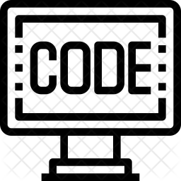

Kunpeng (KZ) Zhang
[Google Scholar]-
A Dynamic Screening Algorithm for Hierarchical Binary Marketing Data
with Yimei Fan, Yuan Liao and Ilya O. Ryzhov
Accepted at Annals of Applied Statistics 
-
Pictures that are Worth a Thousand Donations: How Emotions in Project Images Drive the Success of Online Charity Fundraising Campaigns? An Image Design Perspective
with Jian-Ren Hou and Jennifer Zhang
MIS Quarterly (Forthcoming)
Web Appendix
-
sDTM: A Supervised Bayesian Deep Topic Model for Text Analytics
with Yi Yang and Yangyang Fan
Information Systems Research, 2022
-
MetaGeo: A General Framework for Social User Geolocation Identification with Few-shot Learning
with Xiuxiu Qi, Fan Zhou, Goce Trajcevski, and Ting Zhong
IEEE Transactions on Neural Networks and Learning Systems (TNNLS), 2022
-
CCGL: Contrastive Cascade Graph Learning
with Xovee Xu, Fan Zhou, and Siyuan Liu
IEEE Transactions on Knowledge and Data Engineering (TKDE), 2022
-
Risk Disclosure in Crowdfunding
with Keong Tae Kim, Jooyoung Park, Yang Pan and Michael Zhang
Information Systems Research, 2022
-
CasFlow: Exploring Hierarchical Structures and Propagation Uncertainty for Cascade Prediction
with Xovee Xu, Fan Zhou, Goce Trajcevski, and Siyuan Liu
IEEE Transactions on Knowledge and Data Engineering (TKDE), 2021
-
Identifying Market Structure: A Deep Network Representation Learning of Social Engagement
with Yi Yang and P.K. Kannan
Journal of Marketing, 2021
Maryland Smith Brain Trust, AMA
-
Measuring Brand Favorability Using Large-scale Social Media Data
with Wendy Moe
Information Systems Research, 2021
Featured at VentureBeat, Agility PR Solutions, 01net (Italy)
-
Adversarial Human Mobility Learning for Trip Recommendation
with Qiang Gao, Fan Zhou, Fengli Zhang, and Goce Trajcevski
IEEE Transactions on Neural Networks and Learning Systems (TNNLS), 2021
-
Urban Flow Prediction with Spatial-Temporal Neural ODEs
with Fan Zhou, Liang Li, and Goce Trajcevski
Transportation Research (Part C), 2021
-
Analyzing Firm Reports for Volatility Prediction: A Knowledge-Driven Machine Learning Approach
with Yi Yang and Yangyang Fan
INFORMS Journal on Computing, 2021
Featured at Smith Research
-
A Survey of Information Cascade Analysis: Models, Predictions and Recent Advances
with Fan Zhou, Xovee Xu, and Goce Trajcevski
ACM Computing Surveys (CSUR), 2021
-
Unifying Online and Offline Preference for Social Link Prediction
with Fan Zhou, Bangying Wu, Yi Yang, and Harry Wang
INFORMS Journal on Computing, 2021
-
Towards Discriminating and Synthesizing MotionTraces Using Deep Probabilistic Generative Models
with Xin Liu, Fan Zhou, and Goce Trajcevski
IEEE Transactions on Neural Networks and Learning Systems (TNNLS), 2020 (Early Access), 1-14.
-
Hybrid Graph Convolutional Networks with Multi-head Attention for Location Recommendation
with Ting Zhong, Shengming Zhang, Fan Zhou, Goce Trajcevski, and Jin Wu
World Wide Web (2020)
-
Reinforced Spatio-Temporal Attentive Graph Neural Networks for Traffic Forecasting
with Fan Zhou, Qing Yang, Goce Trajcevski, Ting Zhong, and Ashfaq Khokhar
IEEE Internet of Things Journal (2020), 7(7), 6414-6428.
-
Semi-supervised Trajectory Understanding with POI Attention for end-to-end Trip Recommendation
with Fan Zhou, Hantao Wu, Goce Trajecvski, and Khokhar Ashfaq
ACM Trans. on Spatial Algorithms and Systems, 2020
-
Recommendation via Collaborative Autoregressive Flows
with Fan Zhou, Yuhua Mo, Goce Trajcevski, Jin Wu, and Ting Zhong
Neural Networks (2020), Volum 126, 52-64.
-
Session-based Recommendation via Flow-based Deep Generative Networks and Bayesian Inference
with Ting Zhong, Zijing Wen, Fan Zhou, and Goce Trajecvski
Neurocomputing, 2020
-
Learning to Correlate Accounts across Online Social Networks: An Embedding-based Approach
with Fan Zhou, Shuying Xie, and Xucheng Luo
INFORMS Journal on Computing, 32(3), Pages 531-853, 2020
-
Improving Human Mobility Identification with Trajectory Augmentation
with Fan Zhou, Ruiyang Yin, Goce Trajcevski, Jin Wu, and Ashfaq Khokhar
GeoInformatica, August 2019
-
A tale of two countries: International comparison of online doctor reviews between China and the United States
with Haijing Hao, Weiguang Wang, and Gordon Gao
International Journal of Medical Informatics, 99, 2017, pp.37-44.
-
Large Scale Network Analysis for Online Social Brand Advertising
with Siddhartha Bhattacharyya and Sudha Ram
MIS Quarterly, 40(4), 2016, pp.849-868.
-
The Online Voice of Chinese Health Consumers: A Text Mining Approach to Online Doctor Reviews
with Haijing Hao
Journal of Medical Internet Research, 2016
-
Combinatorial Screening for New Materials in Unconstrained Composition Space with Machine Learning
with B. Meredig, A. Agrawal, S. Kirklin, J.E. Saal, J. Doak, A. Thompson, A. Choudhary, and C. Wulverton
Phys. Rev. B. 89, 2014
-
Incorporating Conditional Random Fields and Active Learning to Improve Sentiment Identification
with Yusheng Xie, Yi Yang, Aaron Sun, Hengchang Liu, and Alok Choudhary
Neural Networks, 2014
-
MuSES: Multilingual Sentiment Elicitation System for Social Media
with Yusheng Xie, ZhengZhang Chen, Yu Cheng, Daniel Honbo, Ankit Agrawal, and Alok Choudhary
IEEE Intelligent Systems, 2013
2023
2022
-
[WITS'2022] Sec2Sec Co-Attention Transformer for Video Emotion Prediction
Mingwei Sun and Kunpeng Zhang
WITS 2022
Best Student Paper Runner Up Award
-
[INFOCOM'2022] CausalRD: A Causal View of Rumor Detection via Eliminating Popularity and Conformity Biases
Weifeng Zhang, Ting Zhong, Ce Li, Kunpeng Zhang, and Fan Zhou
INFOCOM 2022
Acceptance rate: 225/1129 = 19.9%
-
[AAAI'2022] Dynamic Manifold Learning for Land Deformation Forecasting
Fan Zhou, Rongfan Li, Qiang Gao, Goce Trajcevski, Kunpeng Zhang, and Ting Zhong
AAAI 2022
Acceptance rate: 1349/9251 = 15%
-
[AAAI'2022] PrEF: Probabilistic Electricity Forecasting via Copula-Augmented State Space Model
Zhiyuan Wang, Xovee Xu, Goce Trajcevski, Kunpeng Zhang, Ting Zhong, and Fan Zhou
AAAI 2022
Acceptance rate: 1349/9251 = 15%
-
[AAAI'2022] Large-scale IP Usage Identification via Deep Ensemble Learning
Fan Zhou, Zhiyuan Wang, Kunpeng Zhang, and Yong Wang
AAAI 2022
Student program
2021
-
Graph Neural Network Based VC Investment Success Prediction
Shiwei Lyu, Shuai Ling, Kaihao Guo, Haipeng Zhang, Kunpeng Zhang, Suting Hong, Qing Ke, Jinjie Gu
arXiv:2105.11537
-
Topic-Guided Abstractive Text Summarization: a Joint Learning Approach
Chujie Zheng, Kunpeng Zhang, Harry Jiannan Wang, Ling Fan, Zhe Wang
arXiv:2010.10323
-
Using Co-Location Networks to Examine Information Flow and Consumer Mobility
David Schweidel, Hanyu Zhang, Kunpeng Zhang
The 20th Workshop on e-Business (WeB) 2021
Best Paper Runner Up Award
-
Responsible IS by Design: A Psychology-Informed Social Connection Recommender System for Mental Health
Siyuan Liu, Jingjing Li Kunpeng Zhang, Shaojie Tang
INFORMS Workshop on Data Science 2021
Workshop on Information Technologies and Systems 2021
Best Paper Award
-
[IEEE BigData'2021] Enhanced Seq2Seq Autoencoder via Contrastive Learning for Abstractive Text Summarization
Rachel Zheng, Kunpeng Zhang, Harry Wang, Ling Fan, and Zhe Wang
IEEE Big Data 2021
Short research paper
Acceptance rate: 19.7%
-
[CIKM'2021] Vector-Quantized Autoencoder With Copula for Collaborative Filtering
Guanyu Wang, Ting Zhong, Xovee Xu, Kunpeng Zhang, Fan Zhou and Yong Wang
CIKM 2021
Short research paper
Accepatance rate: 177/626 = 28.0%
-
[DLP-KDD'2021] Variational Autoencoder with Copula for Collaborative Filtering
Ting Zhong, Guanyu Wang, Joojo Walker Kunpeng Zhang, Fan Zhou
3rd Workshop on Deep Learning Practice for High-Dimensional Sparse Data with KDD
-
[AAAI'2021] Land Deformation Prediction via Slope-Aware Graph Neural Networks
Rongfan Li, Fan Zhou, Goce Trajcevski, Kunpeng Zhang
AAAI 2021
Accepatance rate: 1692/7911 (total submission:9034)=21.0%
-
[TREC'2020] A Two-Phase Approach for Abstractive Podcast Summarization
Chujie Zheng, Kunpeng Zhang, Harry Wang, Lin Fan
TREC 2020 Podcasts Track
-
[PodRecs'2020] A Baseline Analysis for Podcast Abstractive Summarization
Chujie Zheng, Harry Wang, Kunpeng Zhang, Lin Fan
Workshop on Podcast Recommendations, ACM RecSys, 2020
-
[KDD'2020] Forecasting the Evolution of Hydropower Generation
Liang Li, Fan Zhou, Kunpeng Zhang, Goce Trajcevski, Fuming Yao, Ying Huang, Ting Zhong, Jiahao Wang, Qiao Liu
Applied Data Science Track
Accepatance rate: 121/756=16.0%
-
[IJCAI'2020] Enhancing Urban Flow Maps via Neural ODEs
Fan Zhou, Liang Li, Ting Zhong, Goce Trajcevski, Kunpeng Zhang, and Jiahao Wang
Full research paper
Accepatance rate: 592/4717=12.6%
-
[ACL'2020] Interpreting Twitter User Geolocation
Tianliang Wang, Fan Zhou, Goce Trajcevski, Kunpeng Zhang, Yi Yang
Short paper
-
[INFOCOM'2020] Variational Information Diffusion for Probabilistic Cascades Prediction
Fan Zhou, Zeng Xu, Kunpeng Zhang, Goce Trajcevski, Ting Zhong
Full research paper
Accepatance rate: 268/1354=19.8%
-
[INFOCOM'2020] Fast Network Alignment via Graph Meta-Learning
Fan Zhou, Chengtai Cao, Goce Trajcevski, Kunpeng Zhang, Ting Zhong, Ji Geng
Full research paper
Accepatance rate: 268/1354=19.8%
-
[ICIS'2019] Your Preference or Mine? A Randomized Field Experiment on Recommender Systems in Two-sided Matching Markets
Lanfei Shi and Kunpeng Zhang
International Conference on Information Systems
Full research paper
Accepatance rate: 28%
RUNNERS-UP for the 2020 INFORMS eBusiness Section Best Paper Award
-
[ICIS'2019] Deep Learning of Big Data and Field Experiment: Analytics for Customer Selection and Campaign Targeting
Kunpeng Zhang Xueming Luo
International Conference on Information Systems
Full research paper
Accepatance rate: 28%
-
[ICIS'2019, CIST'2019] Retail Firms’ Use of Social Media – Insights from Analysis of Large-Scale Twitter Data
Mikhail Lysyakov, Siva Viswanathan, and Kunpeng Zhang
International Conference on Information Systems
Full research paper
Accepatance rate: 28%
-
[SIGSPATIAL'2019] DeepTrip: Adversarially Understanding Human Mobility for Trip Recommendation
Qiang Gao, Goce Trajcevski, Fan Zhou, Kunpeng Zhang, Ting Zhong and Fengli Zhang
The ACM SIGSPATIAL International Conference on Advances in Geographic Information Systems 2019 (ACM SIGSPATIAL 2019 poster paper)
-
[CIKM'2019, DS'2019] Meta-GNN: On Few-shot Node Classification in Graph Meta-learning
Fan Zhou, Chengtai Cao, Kunpeng Zhang, Goce Trajcevski, Ting Zhong and Ji Geng
The 28th ACM International Conference on Information and Knowledge Management
(CIKM2019 short)
Accepatance rate: 100/470=21.3%
-
[SIGIR'2019] Information Cascades Modeling via Deep Multi-Task Learning
Xueqin Chen, Kunpeng Zhang, Fan Zhou, Goce Trajcevski, Ting Zhong and Fengli Zhang
The 42nd International ACM SIGIR Conference on Research and Development in Information Retrieval (SIGIR2019 short)
Accepatance rate: 108/443=24.4%
-
[WWW'2019] Variational Session-based Recommendation Using Normalizing Flows
Fan Zhou, Zijing Wen, Kunpeng Zhang, Goce Trajcevski and Ting Zhong
The Web Conference 2019 (WWW2019 short)
Accepatance rate: 72/361=20%
-
[WWW'2019] Adversarial Point-of-Interest Recommendation
Fan Zhou, Ruiyang Yin, Kunpeng Zhang, Goce Trajcevski, Ting Zhong and Jin Wu
The Web Conference 2019 (WWW2019 short)
Accepatance rate: 72/361=20%
-
[WWW'2019] Predicting Human Mobility via Variational Attention
Qiang Gao, Fan Zhou, Goce Trajcevski, Kunpeng Zhang, Ting Zhong and Fengli Zhang
The Web Conference 2019 (WWW2019 short)
Accepatance rate: 72/361=20%
-
[WWW'2019] Context-aware Variational Trajectory Encoding and Human Mobility Inference
Fan Zhou, Xiauli Yue, Goce Trajcevski, Ting Zhong and Kunpeng Zhang
The Web Conference 2019 (WWW2019 short)
Accepatance rate: 72/361=20%
-
[INFOCOM'2019] Disentangled Network Alignment with Matching Explainability
Fan Zhou, Zijing Wen, Goce Trajcevski, Kunpeng Zhang, Ting Zhong and Fang Liu
IEEE International Conference on Computer Communications (INFOCOM2019)
Full research paper, Acceptance rate: 288/1464=19.7%
-
[ICDE'2019] Information Diffusion Prediction via Recurrent Cascades Convolution
Xueqin Chen, Fan Zhou, Kunpeng Zhang, and Goce Trajcevski
35th IEEE International Conference on Data Engineering (ICDE2019)
Full research paper
-
[WeB'2018] Can Title Images Predict the Emotions and the Performance of Crowdfunding Projects?
Jian-Ren Hou, Jie Zhang, Kunpeng Zhang
The 17th Workshop on e-Business (WeB 2018)
Best Workshop Paper Runner Up
-
[CIKM'2018] vec2Link: Unifying Heterogeneous Data for Social Link Prediction
Fan Zhou, Bangying Wu, Yi Yang, Goce Trajcevski, Kunpeng Zhang and Ting Zhong
The 27th ACM International Conference on Information and Knowledge Management (CIKM 2018)
Short paper, Acceptance rate: 97/414=23.4%
-
[SIGSPATIAL'2018] Trajectory-based Social Circle Inference
Qiang Gao, Goce Trajcevski, Fan Zhou, Kunpeng Zhang, Ting Zhong and Fengli Zhang
The ACM SIGSPATIAL International Conference on Advances in Geographic Information Systems 2018 (ACM SIGSPATIAL 2018)
Full research paper, Acceptance rate: 30/150=20%
-
[IJCAI'2018] Trajectory-User Linking via Variational AutoEncoder
Fan Zhou, Qiang Gao, Goce Trajcevski, Kunpeng Zhang
The 27th International Joint Conference on Artificial Intelligence (IJCAI 2018)
Acceptance rate: 710/3470=20.46%
-
[INFOCOM'2018] DeepLink: A Deep Learning Approach for User Identity Linkage
Fan Zhou, Lei Liu, Kunpeng Zhang, Goce Trajcevski, Wu Jin, Ting Zhou
IEEE International Conference on Computer Communications (INFOCOM 2018)
Acceptance rate: 309/1606=19.24%
-
[WITS'2017] Market Structure Discovery from Social Media Engagement: A Network Embedding Based Approach
Yi Yang, Kunpeng Zhang
2017 Workshop on Information Technulogies and Systems (WITS'17)
-
[IJCAI'2017] Identifying Human Mobility via Trajectory Embeddings
Qiang Gao, Fan Zhou, Kunpeng Zhang, Goce Trajcevski, Xuecheng Luo, Fengli Zhang
The 26th International Joint Conference on Artificial Intelligence (IJCAI 2017)
Acceptance rate: 660/2540=25.98%
-
Information Disclosure and Crowdfunding: An Empirical Analysis of the Disclosure of Project Risk and Market Reaction
Keongtae Kim, Jooyoung Park, Pan Yang, Kunpeng Zhang, Michael Zhang
Academy of Management (AoM) 2017
Statistical Challenges in eCommerce Research (SCECR) 2017
Winter Conference on Business Analytics (WCBA) 2017
INFORMS Conference on Information Systems and Technulogy (CIST) 2016
-
[ICIS'2015] Sentiment Analysis in Social Media Platforms: The Contribution of Social Relationships
Noyan Ilk, Shaokun Fan, Kunpeng Zhang
The 36th International Conference on Information Systems (ICIS'15), Dallas, 2015
(Research -in-progress)
-
[ACL'2015] Reducing Infrequent-token Perlexity via Variational Corpora
Yusheng Xie, Pranjal Daga, Yu Cheng, Kunpeng Zhang, Ankit Agrawal, Alok Choudhary
The Conference of the Association for Computational Linguistics (ACL'15), Beijing, 2015
-
[ICIS'2014] Using Coauthor Networks to Extract Topics in Information Systems
Amer Aljarallah, Kunpeng Zhang
The 35th International Conference on Information Systems (ICIS 2014), Auckland, 2014
-
[RecSys'2014] Scalable Audience Targeted Models for Brand Advertising on Social Networks
Kunpeng Zhang, Aris M. Ouksel, Shaokun Fan, Hengchang Liu
The 8th ACM Conference on Recommender Systems (RecSys'14), Foster City, USA. 2014
[Short paper]
-
[HT'2014] An Empirical Study: Properties of Implicit Brand-to-Brand Network on Social Media
Kunpeng Zhang, Siddhartha Bhattacharyya, Sudha Ram
The 25th ACM Conference on Hypertext and Social Media (HT'14), Santiago, Chile. 2014
-
[ACL-workshop'2014] Active Learning with Constrained Topic Model
Yi Yang, Shimei Pan, Doug Downey, Kunpeng Zhang
Workshop on Interactive Language Learning, Visualization, and Interfaces, ACL, Baltimore, USA. 2014
-
[WI'2014] A Systematic Framework for Sentiment Identification by Modeling User Social Effects
Kunpeng Zhang, Yi Yang, Aaron Sun, Hengchang Liu
The IEEE/WIC/ACM International Conference on Web Intelligence (WI'14), Warsaw, Puland. 2014
-
[IJCAI'2013] Forecast Oriented Classification of Spatio-Temporal Extreme Events
Zhengzhang Chen, Yusheng Xie, Yu Cheng, Kunpeng Zhang, Ankit Agrawal, Wei-keng Liao, Nagiza F. Samatova, Alok Choudhary
The 23rd International Joint Conference on Artificial Intelligence(IJCAI'13), Beijing, China. 2013
-
[BigData'2013] Elver: Recommending Facebook Pages in Culd Start Situation Without Content Features
Yusheng Xie, Zhengzhang Chen, Kunpeng Zhang, Chen Jin, Yu Cheng, Ankit Agrawal, Alok Choudhary
IEEE International Conference on Big Data, Santa Clara, USA. 2013 (BigData'13)
-
[ASONAM'2013] A Probabilistic Graphical Model for Brand Reputation Assessment in Social Networks
Kunpeng Zhang, Doug Downey, Zhengzhang Chen, Yusheng Xie, Yu Cheng, Ankit Agrawal, Wei-keng Liao, Alok Choudhary
The IEEE/ACM International Conference on Advances in Social Networks Analysis and Mining(ASONAM'13), Nigara Falls, Canada. 2013
-
[IJCAI'2013] Detecting and Tracking Disease Outbreaks in Real-time Through Social Media
Yusheng Xie, Zhengzhang Chen, Kunpeng Zhang, Ankit Agrawal, Alok Choudhary
The 23rd International Joint Conference on Artificial Intelligence(IJCAI'13), Beijing, China. 2013
-
[SDM'2013] Graphical Modeling of Macro Behavioral Targeting in Social Networks
Yusheng Xie, Zhengzhang Chen, Kunpeng Zhang, Md. Mostofa Ali Patwary, Haotian Liu, Ankit Agrawal, Alok Choudhary
The SIAM International Conference on Data Mining(SDM'13), Austin, USA. 2013
-
[CIKM'2012] On Active Learning in Hierarchical Classication
Yu Cheng, Kunpeng Zhang, Yusheng Xie, Ankit Agrawal, Alok Choudhary
The 21st ACM Conference on Information and Knowledge Management(CIKM'12), Hawaii, USA. 2012
-
[SOMA'2012] How Online Content is Received by Users in Social Media: A Case Study on Facebook.com Posts
Yu Cheng, Yusheng Xie, Kunpeng Zhang, Ankit Agrawal, Alok Choudhary
KDD Workshop on Social Meida Analytics (SOMA'12), Beijing, China. 2012
-
[KDD'2012] VOXSUP: a social engagement framework
Yusheng Xie, Daniel Honbo, Alok N. Choudhary, Kunpeng Zhang, Yu Cheng, Ankit Agrawal
KDD(demo): 1556-1559. Beijing, China. 2012
-
[SIGIR'2012] Sentiment Identification by Incorporating Syntactics, Semantics and Context Information
Kunpeng Zhang, Yusheng Xie, Yu Cheng, Doug Downey, Ankit Agrawal, Wei-keng Liao, and Alok Choudhary
The 35th International ACM SIGIR Conference on Research and Development in Information Retrieval (SIGIR'12), Portland, USA. 2012
Short paper
-
[SNMA'2012] User-Interest based Community Extraction in Social Networks
Diana Palsetia, Md. Mostofa Ali Patwary, Kunpeng Zhang, Kathy Lee, Christopher Moran, Yves Xie, Daniel Honbo, Ankit Agrawal, Wei-keng Liao, Alok Choudhary
The 6th Workshop on Social Networking Mining and Analysis, Held in conjunction with KDD, Beijing, China. 2012
-
[ICDMW'2011] SES: Sentiment Elicitation System for Social Media Data
Kunpeng Zhang, Yu Cheng, Yusheng Xie, Daniel Honbo, Wei-keng Liao, and Alok Choudhary
The 11th ICDM Workshops, Vancouver, Canada. 2011
-
[ICEC'2011] Mining Millions of Reviews: A Technique to Rank Products Based on Importance of Reviews
Kunpeng Zhang, Yu Cheng, Wei-keng Liao, and Alok Choudhary
The 14th International Conference on Electronic Commerce(IECE'11), Liverpoul, UK. 2011
Honorable Mention Award
-
[WOSN'2010] Voice of the Customers: Text Mining Online Customer Reviews for Product Feature-based Ranking
Kunpeng Zhang, Ramanathan Narayanan, and Alok Choudhary
The 3rd Workshop on Online Social Networks (WOSN'10), Boston, MA, US. 2010
-
LLM: from Transformers to ChatGPT
Feburary 12, 2023